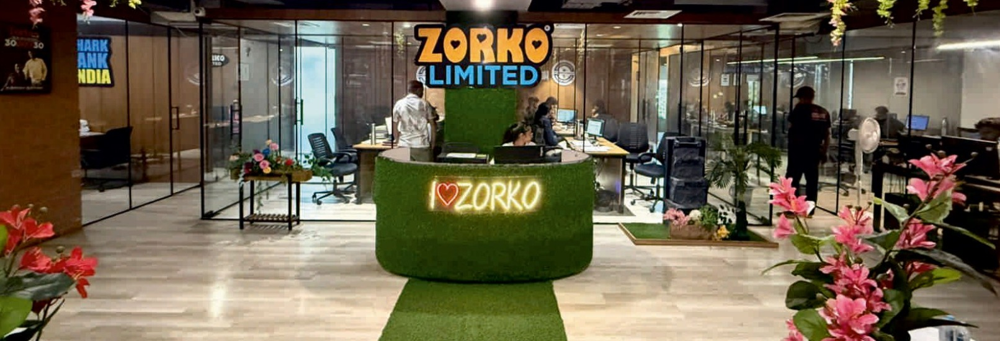

A familiar first hello.
Our reception introduces visitors to the people and identity of Zorko.
Welcome to our corporate home in Vesu, Surat. This is where the people, ideas, and everyday work behind Zorko come together.

Glass-fronted rooms, shared work areas, and a green reception define the office shown in Zorko Spotlight. It is a working home for the people connecting a national food network.
From a first conversation with a potential partner to an operational review, our office brings different parts of the business into the same conversation.
Explore the office gallery

Our reception introduces visitors to the people and identity of Zorko.

Shared desks connect colleagues across the everyday work of the business.
Meeting areas create space for focused conversations and collaboration.
Training centres, warehousing, and the franchise network extend the work beyond the corporate office. Together, they support the practical needs of a growing vegetarian food business.
Discover our culture